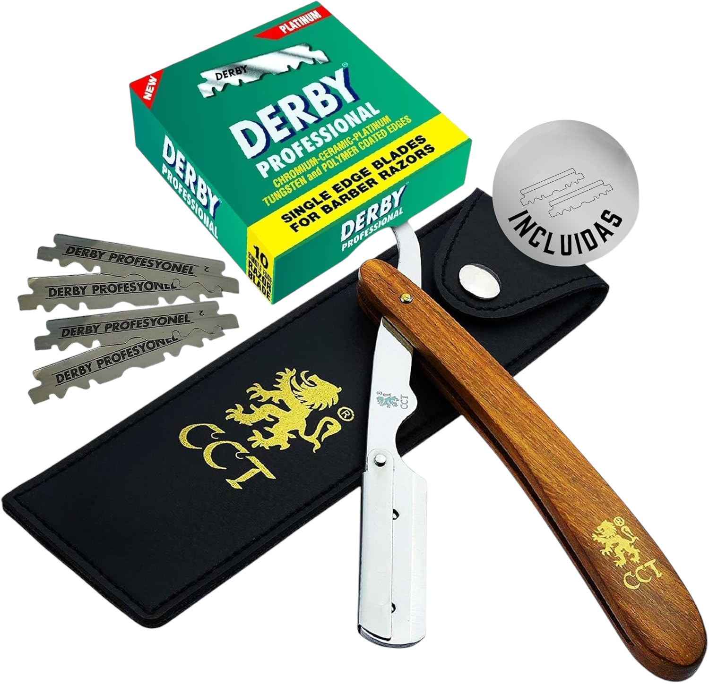
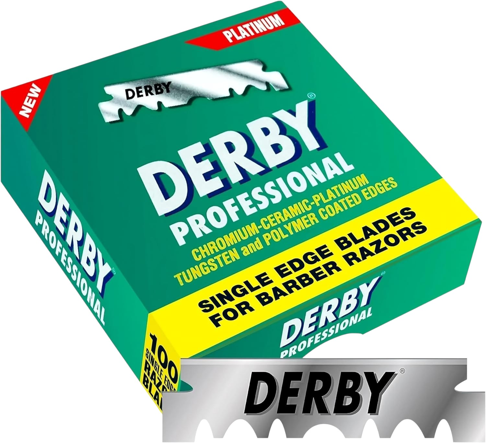
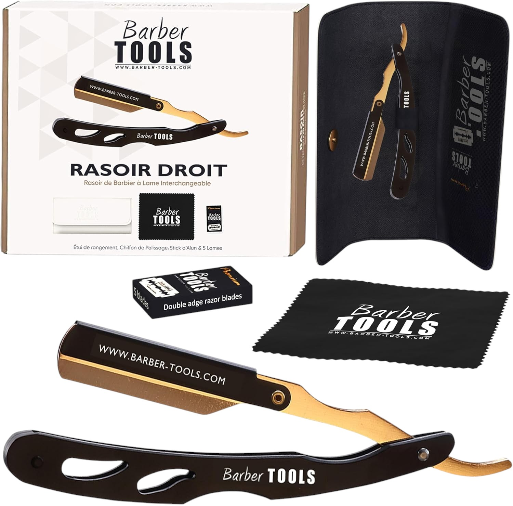

Navalha Profissional ASIPRO
Navalha estilo clássico com pega ergonómica, lâminas substituíveis e estojo de transporte. Ideal para barbearias e uso pessoal.
Ver na AmazonUma categoria mais tradicional, indicada para quem valoriza precisão, ritual de barbear e ferramentas clássicas.
Navalha estilo clássico com pega ergonómica, lâminas substituíveis e estojo de transporte. Ideal para barbearias e uso pessoal.
Ver na Amazon
Conjunto completo com navalha de barbear tradicional, lâminas, pincel e estojo elegante. Ideal para quem valoriza o ritual clássico do barbear.
Ver na Amazon
Pacote com 100 lâminas individuais de borda única. Revestidas a platina, tungsténio e cerâmica para um corte profissional e preciso.
Ver na Amazon
Conjunto de lâminas compatíveis com navalhas tradicionais. Excelente desempenho e afiação consistente para uso profissional.
Ver na Amazon